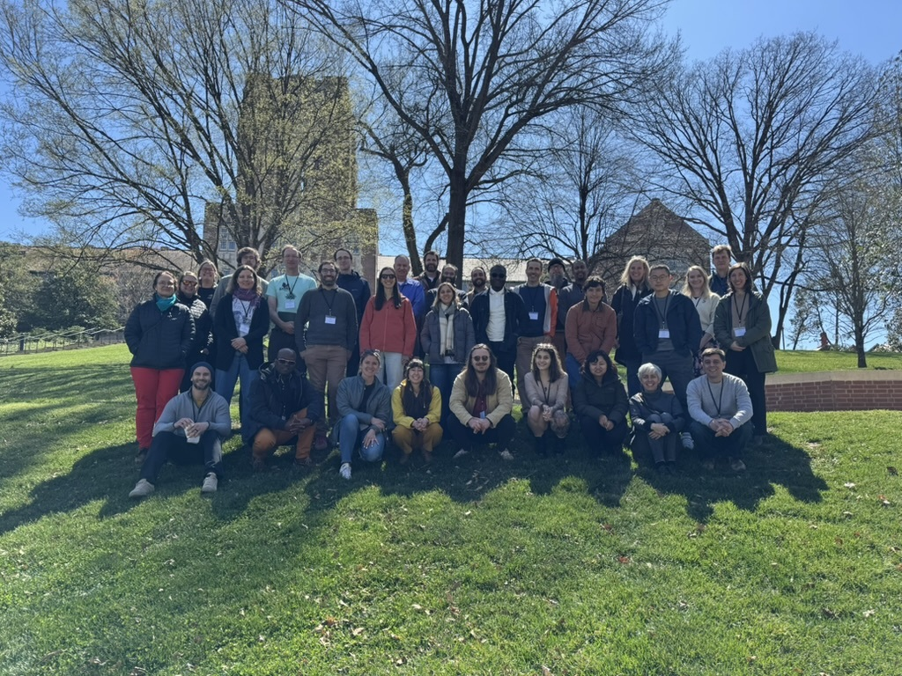
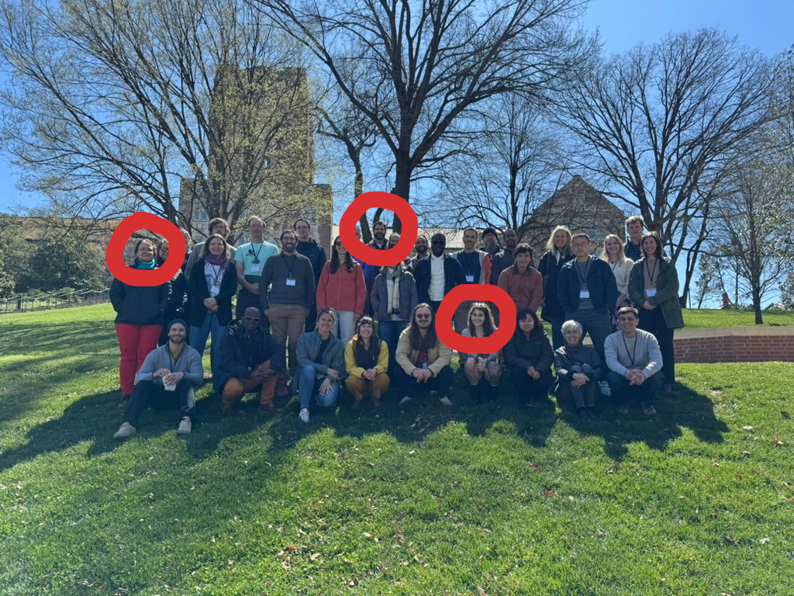
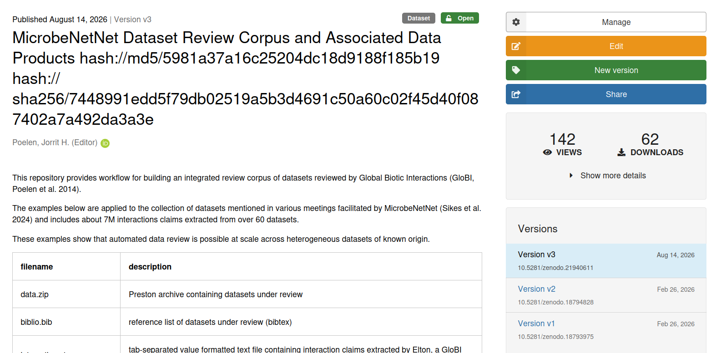
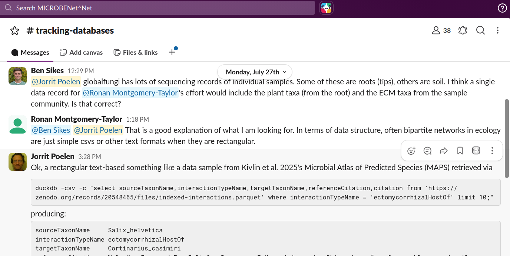

as reflected in data connections
Jorrit Poelen (UC Santa Barbara Cheadle Center, Ronin Institute)
2026-09-11
[…] New Datasets/Nodes/Networks that might be connected (Jorrit)
What data are there (plain language summaries)?
How can people access what are there?
Case study, Review example of FRED and MaarjAM networks - how you found the data, wed them. Generalizable for other efforts? […] 1
[…] MICROBENet^Net 2[1] Theme and Grand Challenge: Plants and microorganisms regulate a diverse array of processes that modulate the Earth system. Yet, we know remarkably little about how variable plant-microbial interactions are across the globe, how microbial connections with plants respond to global change, and if changes in plant-microbe interactions will lead to predictable changes in plant, ecosystem, and macro-scale ecology. While microbial ecologists and plant ecologists both explore questions about geography, interactions, and function, this work has often occurred in plant or microbial silos. Focusing on either plants or microbes resulted in the development of distinct disciplinary vocabularies and meanings, even when using similar tools and asking questions across similar scales. […]

3.
4.Since the inaugural MicrobeNetNet ([1], MN^N) colloquium in Knoxville, TN 2025-03-20/2025-03-24 [2], Jorrit Poelen has collaborated with many MN^N participants and nodes to use existing methods [3,4] to review and integrate existing datasets, databases, and collections describing plant-microbe interactions into the openly accessible and citable MicrobeNetNet Data Review Corpus [5,6]. The 2026-08-14 version of the MN^N Review Corpus is a global dataset containing over 7 million claims sourced from MycoPortal (a data portal of a consortium of Mycology Collections), USDA United States National Fungus Collections Fungus-Host Dataset, Microbial Atlas of Predicted Species (MAPS), AusTrait, Fine Root Ecology Database (FRED), MaarjAM, FungalTraits, FunFun, Global(AM)Fungi, International Collection of Microorganisms from Plants (ICMP), MycoDB, USDA ARS Culture Collection (NRRL), and Unite and more. […] We expect to continue to integrate existing datasets […], but also improve the data infrastructures [7] that help keep this openly data accessible. 5

6(You or Your Colleagues)
-[:curate]->
(Original Data)
-[:usedIn]->
(MNN Data Review)
-[:partOf]->
(MNN Data Review Corpus)
-[:usedBy]->
(... everyone?)
[1] Sikes, B.A., Zanne E.A., Classen, A.T, Kivlin S.N. (2024) MICROBENet-Net: Multi-Institute Collaborative Research on BElowground plant-microbial interactions Network of Networks. 2024/2028 NSF AccelNet Award 2412561 https://microbenetwork.net/ https://globalbioticinteractions.org/microbenetnet
[2] Sikes, B., Classen, A., Kivlin, S., Zanne, A.& Holly Andres. (2025, May 29). 2025 MicrobeNet^Net Colloquium. Zenodo. 2025 MicrobeNet^Net Colloquium, Knoxville, TN. https://doi.org/10.5281/zenodo.15547951
[3] Jorrit H. Poelen, James D. Simons and Chris J. Mungall. (2014). Global Biotic Interactions: An open infrastructure to share and analyze species-interaction datasets. Ecological Informatics. https://doi.org/10.1016/j.ecoinf.2014.08.005.
[4] Elliott M.J., Poelen, J.H. & Fortes, J.A.B. (2023) Signing data citations enables data verification and citation persistence. Sci Data. https://doi.org/10.1038/s41597-023-02230-y hash://sha256/f849c870565f608899f183ca261365dce9c9f1c5441b1c779e0db49df9c2a19d
[5] Poelen, J. H. (2026, Feb). MicrobeNetNet Dataset Review Corpus and Associated Data Products hash://md5/5981a37a16c25204dc18d9188f185b19 hash://sha256/7448991edd5f79db02519a5b3d4691c50a60c02f45d40f087402a7a492da3a3e [Data set]. Zenodo. https://doi.org/10.5281/zenodo.18793975
[6] Poelen, J. H. (2026). MicrobeNetNet Dataset Review Corpus and Associated Data Products hash://md5/5981a37a16c25204dc18d9188f185b19 hash://sha256/7448991edd5f79db02519a5b3d4691c50a60c02f45d40f087402a7a492da3a3e [Dataset]. Zenodo. https://doi.org/10.5281/zenodo.21940611
[7] Poelen, J. H. (2026) Data Dryad Feature Request: retrieve content by hash / checksum. GitHub. See also https://github.com/datadryad/dryad-app/pull/3107 https://github.com/datadryad/dryad-product-roadmap/issues/5182
Sikes, B. 2026-09-08. Pers. Comm.↩︎
Sikes, B.A., Zanne E.A., Classen, A.T, Kivlin S.N. (2024) MICROBENet-Net: Multi-Institute Collaborative Research on BElowground plant-microbial interactions Network of Networks. 2024/2028 NSF AccelNet Award 2412561 https://microbenetwork.net/ https://globalbioticinteractions.org/microbenetnet↩︎
Sikes, B., Classen, A., Kivlin, S., Zanne, A.& Holly Andres. (2025, May 29). 2025 MicrobeNet^Net Colloquium. Zenodo. 2025 MicrobeNet^Net Colloquium, Knoxville, TN. https://doi.org/10.5281/zenodo.15547951↩︎
Sikes, B., Classen, A., Kivlin, S., Zanne, A.& Holly Andres. (2025, May 29). 2025 MicrobeNet^Net Colloquium. Zenodo. 2025 MicrobeNet^Net Colloquium, Knoxville, TN. https://doi.org/10.5281/zenodo.15547951↩︎
Excerpt from Jorrit’s update submitted to Ben for NSF report on 2026-08-14↩︎
Poelen, J. H. (2026). MicrobeNetNet Dataset Review Corpus and Associated Data Products hash://md5/5981a37a16c25204dc18d9188f185b19 hash://sha256/7448991edd5f79db02519a5b3d4691c50a60c02f45d40f087402a7a492da3a3e [Dataset]. Zenodo. https://doi.org/10.5281/zenodo.21940611↩︎